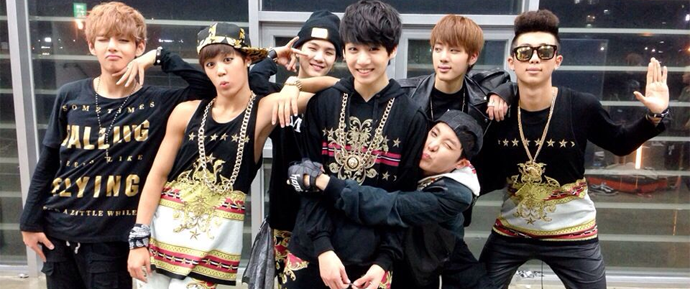
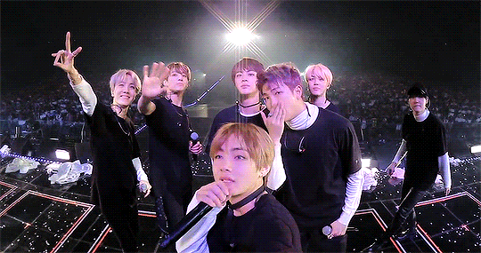

Saiba tudo sobre o debut do BTS
O grupo debutou como Bagtan Boys no dia 11 de junho de 2013 com o videoclipe de "No more Dream". juntamente com o videoclipe, também foi lançado o single álbum 2COOL 4 SKOOL. Em 16 de julho foi lançadoo o vidoclipe praa música "WE ARE BULLETPROOFT" Pt2.

Conhecendo os membros
O grupo tem 7 membros, eles são:
V,Jung-Kook,park ji-min,Suga,Jin,Rm
 Dá uma olhada no insta do grupo